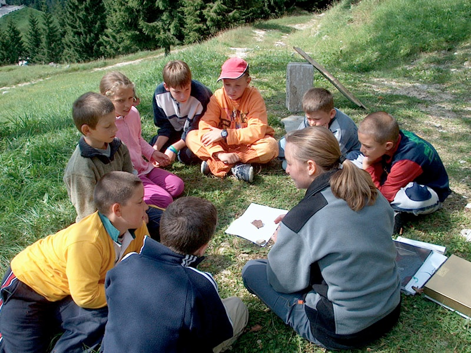
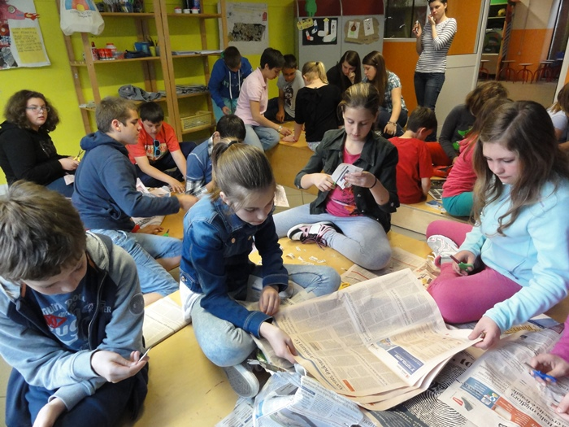

Le Guide del Parco sono una via privilegiata per instaurare un rapporto più attento con la Natura. Sia che tu voglia semplicemente rilassarti, con una breve passeggiata, sia che cerchi l’emozione delle grandi traversate, sia che il tuo interesse vada agli aspetti più specifici del territorio, ogni occasione è indicata per chiedere la guida di un operatore esperto!
Escursioni di durata variabile, da poche ore all'intera giornata, secondo le tue richieste e i tuoi interessi Itinerari predisposti per soddisfare le esigenze di ogni età: dalle agevoli mulattiere ai percorsi più impegnativi in tutte le valli del Parco. Le escursioni possono durare una giornata intera, con pranzo al sacco, o mezza giornata. A Noasca la giornata può prevedere un'escursione breve seguita da un'attività all'interno del Centro di Educazione Ambientale dove è attrezzato un laboratorio didattico. A richiesta si organizzano escursioni notturne.
 Serate con proiezioni e conferenze per enti e associazioni Le proiezioni di filmati e diapositive possono rappresentare un primo incontro stimolante per preparare i gruppi ad un'esperienza attiva nel Parco.
Attività di educazione ambientale per le scuole, anche con l'utilizzo di audiovisivi e unità didattiche apposite Su richiesta si possono pertanto affrontare temi specifici o cicli di interventi in classe, per dare ai ragazzi l'opportunità di riprendere con gli insegnanti i concetti trattati di volta in volta. Il Centro di Educazione Ambientale di Noasca offre la possibilità di rielaborare in laboratorio le osservazioni fatte in natura, riconoscere e determinare le specie, attraverso l’uso di attrezzature e di collezioni didattiche. I laboratori all’aperto sono volti invece alla comprensione delle relazioni tra i viventi, l’ambiente che li ospita e l’uomo.
Soggiorni di studio Durante tutto l'anno si organizzano soggiorni per famiglie e gruppi organizzati, scuole di ogni ordine e grado. I soggiorni possono essere di tipo generale, e quindi affrontare con un approccio complessivo e di relazione gli aspetti di protezione dell'ambiente, oppure vertere su temi specifici di approfondimento. I progetti didattici attualmente in corso si articolano in "sotto-progetti" che possono essere contestualizzati a precise esigenze del gruppo.
Trekking di più giorni alla scoperta delle cinque valli del Parco Per chi ha sufficiente allenamento fisico si propongono percorsi di 2 o più giorni, con pernottamento in rifugi. Il trekking accompagnato assume la valenza non solo della traversata escursionistica, ma anche del vivere completamente immersi nella natura con la possibilità di osservare da vicino la fauna del Parco e attraversare gli ambienti alpini più tipici.